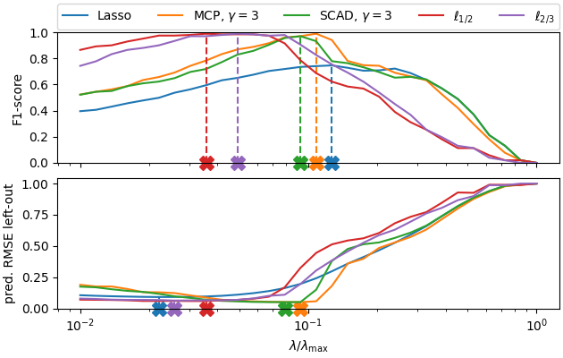

Note
Go to the end to download the full example code.
Sparse recovery with non-convex penalties#
Illustrate the superior performance of penalties for sparse recovery.
Running lasso...
Running mcp...
Running scad...
Running l05...
Running l23...
# Author: Mathurin Massias
# Quentin Bertrand
# Quentin Klopfenstein
import numpy as np
from numpy.linalg import norm
import matplotlib.pyplot as plt
from sklearn.model_selection import train_test_split
from sklearn.metrics import f1_score, mean_squared_error
from skglm.utils.data import make_correlated_data
from skglm.solvers import AndersonCD
from skglm.datafits import Quadratic
from skglm.penalties import L1, MCPenalty, L0_5, L2_3, SCAD
cmap = plt.get_cmap('tab10')
# Simulate sparse data
n_features = 1000
density = 0.1
np.random.seed(0)
supp = np.random.choice(n_features, size=int(density * n_features),
replace=False)
w_true = np.zeros(n_features)
w_true[supp] = 1
X_, y_, w_true = make_correlated_data(
n_samples=1000, n_features=1000, snr=5, random_state=2,
rho=0.5, w_true=w_true)
# standardize for MCP
X_ /= norm(X_, axis=0) / np.sqrt(len(X_))
X, X_test, y, y_test = train_test_split(X_, y_, test_size=0.5)
# Compute l1 penalty value which leads to 0 as solution
alpha_max = norm(X.T @ y, ord=np.inf) / len(y)
# Define a range of penalty values
n_alphas = 30
alphas = alpha_max * np.geomspace(1, 1e-2, num=n_alphas)
datafit = Quadratic()
penalties = {}
penalties['lasso'] = L1(alpha=1)
penalties['mcp'] = MCPenalty(alpha=1, gamma=3)
penalties['scad'] = SCAD(alpha=1, gamma=3)
penalties['l05'] = L0_5(alpha=1)
penalties['l23'] = L2_3(alpha=1)
colors = {}
colors['lasso'] = cmap(0)
colors['mcp'] = cmap(1)
colors['scad'] = cmap(2)
colors['l05'] = cmap(3)
colors['l23'] = cmap(4)
f1 = {}
estimation_error = {}
prediction_error = {}
l0 = {}
mse_ref = mean_squared_error(np.zeros_like(y_test), y_test)
solver = AndersonCD(ws_strategy="fixpoint", fit_intercept=False)
for idx, estimator in enumerate(penalties.keys()):
print(f'Running {estimator}...')
estimator_path = solver.path(
X, y, datafit, penalties[estimator],
alphas=alphas)
f1_temp = np.zeros(n_alphas)
prediction_error_temp = np.zeros(n_alphas)
for j, w in enumerate(estimator_path[1].T):
f1_temp[j] = f1_score(w != 0, w_true != 0)
prediction_error_temp[j] = mean_squared_error(X_test @ w, y_test) / mse_ref
f1[estimator] = f1_temp
prediction_error[estimator] = prediction_error_temp
name_estimators = {'lasso': "Lasso"}
name_estimators['mcp'] = r"MCP, $\gamma=%s$" % 3
name_estimators['scad'] = r"SCAD, $\gamma=%s$" % 3
name_estimators['l05'] = r"$\ell_{1/2}$"
name_estimators['l23'] = r"$\ell_{2/3}$"
plt.close('all')
fig, axarr = plt.subplots(2, 1, sharex=True, sharey=False, figsize=[
6.3, 4], constrained_layout=True)
for idx, estimator in enumerate(penalties.keys()):
axarr[0].semilogx(
alphas / alphas[0], f1[estimator], label=name_estimators[estimator],
c=colors[estimator])
axarr[1].semilogx(
alphas / alphas[0], prediction_error[estimator],
label=name_estimators[estimator], c=colors[estimator])
max_f1 = np.argmax(f1[estimator])
axarr[0].vlines(
x=alphas[max_f1] / alphas[0], ymin=0,
ymax=np.max(f1[estimator]),
color=colors[estimator], linestyle='--')
line1 = axarr[0].plot(
[alphas[max_f1] / alphas[0]], 0, clip_on=False,
marker='X', color=colors[estimator], markersize=12)
min_error = np.argmin(prediction_error[estimator])
lims = axarr[1].get_ylim()
axarr[1].vlines(
x=alphas[min_error] / alphas[0], ymin=0,
ymax=np.min(prediction_error[estimator]),
color=colors[estimator], linestyle='--')
line2 = axarr[1].plot(
[alphas[min_error] / alphas[0]], 0, clip_on=False,
marker='X', color=colors[estimator], markersize=12)
axarr[1].set_xlabel(r"$\lambda / \lambda_{\mathrm{max}}$")
axarr[0].set_ylabel("F1-score")
axarr[0].set_ylim(ymin=0, ymax=1.0)
axarr[1].set_ylim(ymin=0, ymax=lims[1])
axarr[1].set_ylabel("pred. RMSE left-out")
axarr[0].legend(
bbox_to_anchor=(0, 1.02, 1, 0.2), loc="lower left",
mode="expand", borderaxespad=0, ncol=5)
plt.show(block=False)
Total running time of the script: (0 minutes 8.328 seconds)